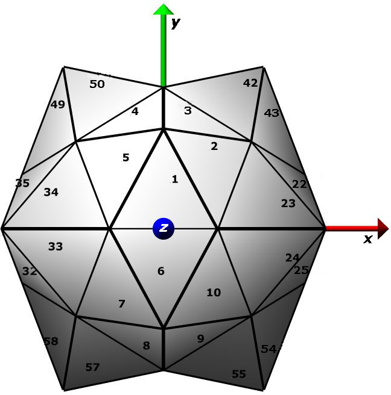

|  | PointSuite is a set of
programs to process macromolecular assemblies described by
point and helical symmetry operations, with the goals of
uniform annotation, archiving, and viewing. In order
to handle coordinates deposited in any orthogonal Cartesian
frame, the relationships between the deposition, standard
point and crystal frames are captured as frame
transformations. For example, the transformation
required to move icosahedral virus structures from deposited
position to the standard frame shown at left is calculated
and recorded. All point symmetries are fully handled;
helical entries are handled only for non-crystal cases. Written/compiled by C. Lawson, with thanks to V.J. Reddy (TSRI) for sharing PDB2VIPER code (findframe); Tom Goddard (UCSF) for Chimera scripts (runchimera.csh); Huanwang Yang (RCSB PDB) for importmats and cif-handling subroutines. Please look at this open access article that describes how Pointsuite was used to remediate virus structures in the PDB: Lawson CL, Dutta SD, Westbrook JD, Henrick K, Berman HM (2008) Representation of viruses in the remediated PDB archive, Acta Cryst D, 874-882. |
| DOWNLOAD: pointsuite0.7.tgz
(version date: January 15, 2013) |
|
| Virus Processing Tutorial |
|
| Installation Instructions Documentation |
INSTALL/COMPILE/CONFIGURE:
Type the following commands in the directory where you want to
install the software.
The program FINDFRAME calculates the transformation matrix that
moves the asymmetric unit of a particle with point symmetry in an
arbitrary (skew) frame into a defined position within a standard
point frame. The standard icosahedral
frame is defined as having the 5-fold axis of the first pentamer
centered on the vector (x=0,y=1, z=phi), where phi is the
golden ratio (sqrt(5)+1)/2. This convention is also employed
by the VIPER database and the is proposed convention of Belnap et.
al. for cryoEM maps.
FINDFRAME is an extension of the PDB2VIPER program from the VIPERdb (Shepherd, et al. (2006) Nucleic Acids Res, 34, D386-389) that incorporates the qikfit least-squares fitting routine from Bioplib (A.C.R. Martin, personal communication). Algorithm steps have been added to increase the precision of the calculated transformation matrix and to improve uniformity of coordinate placement relative to the standard icosahedron symmetry axes (see description below).
on the command line:
>findframe
infile.pdb/cif
The input file is expected to have all needed transformation
matrices to build the icosahedral or other point group particle
AND coordinates for the asymmetric unit . PDB
matrices can be given either as REMARK 350 BIOMT or MTRIX records;
in cif the matrices are given in _pdbx_struct_oper_list and must
have type of "general operation", "point symmetry operation" or
"helical symmetry operation". One of
the transformation matrices must be the identity element. Optional:
a second file can be provided with BIOMT records; in this case the
matrices in the 2nd file override any present in the first file.
modifications to PDB2VIPER (from V.J. Reddy) are in italics
General info about the calculation is provided
in the standard output. On successful execution a cif file
with symmetry and frame transformation info is also output
called *findframe.cif*.
Generates sets of transformations corresponding
to point or helical symmetry provided in the input cif file (
_pdbx_point_symmetry, _pdbx_helical_symmetry).
If the input cif contains a "transform to point frame"
matrix with _pdbx_struct_oper_list.id labelled 'P' (or a
"transform to helical frame" matrix is given with
_pdbx_struct_oper_list.id labelled 'H'), the matrix set is
transformed such that it can be applied to coordinates away from
the standard frame, e.g., [P-inv][std mats][P]. Use
pointmats to obtain simple matrix set output files for
point/helical symmetry operations; use makeassembly if you need
full assembly and asymmetric unit descriptions.
General info about the calculation is provided
in the standard output; the matrices are written in CIF format to
pointmats.cif and in BIOMT format to pointmats.biomt. Point
symmetry operations follow a standard order. Helical
symmetry operations are given as a continuous run centered around
the identity element.
The set of point symmetry operations
corresponding to a crystal asymmetric unit is identified, given
the following input: CIF file with unitcell, spacegroup, asym_id,
entity_id records , cif with _pdbx_point _symmetry or
_pdbx_helical_symmetry and _pdbx_struct_oper_list with frame
transformations (P for "transform to point frame" ; H for
"transform to helical frame"; X0, X1, etc. for "transform to
crystal frame"). The program will analyse the structure for
ncs only if at least one "transform to crystal frame" matrix is
given (X0) (this will frequently be the identity matrix). FROM
v.5.7 onward, makeassembly outputs asym_id lists instead of
author_asym id list.
Crystal frame transformations are optional (e.g., for EM
structures):
>makeassembly uc_symtry_scale_.cif
symm_transforms.cif
General info about the calculation for each
independent particle is provided in the standard output; an
archival cif (assembly.cif) is generated, as well as biomt records
for the full assembly (assembly.biomt). For crystal
structures a bare-bones crystal frame pdb file is created that can
be input to sfcheck or packing programs (assembly_xframe.pdb), and
ncs records are generated (assembly.ncs).
Performs complex matrix multiplications
given a list of matrices in cif format and a string defining the
desired multiplication.
String can include numerical ranges and recursion.
examples:
"(1-2)(3,5,7-9)" creates the set of matrices 1*3, 1*5,
1*7, 1*8, 1*9, 2*3, 2*5, 2*7, 2*8, 2*9
"(1)(2,(2)(2),(2)(2)(2))" creates the set of matrices 1*2,
1*2*2, 1*2*2*2
call with
>multiplymats <pointmats or assembly cif> <matrix
multiplication string in double quotes>
example (1m4x):
multiplymats 1m4x.cif "(1-60)(61-88)"
number of matrices read: 89
Matrix multiplication expression to be parsed: (1-60)(61-88)
result:
1*61
1*62
1*63
1*64
1*65
1*66
1*67
1*68
1*69
1*70
1*71
...
60*85
60*86
60*87
60*88
Writing 1680 matrices to *mult.cif*
Writing 1680 matrices to *mult.biomt*
last modified 14 Jan 2013
C. Lawson